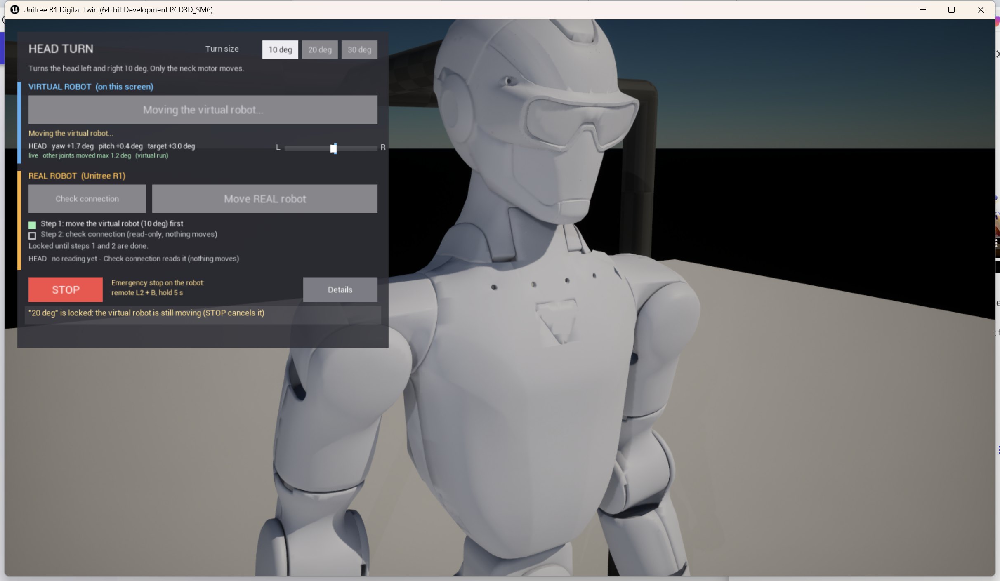
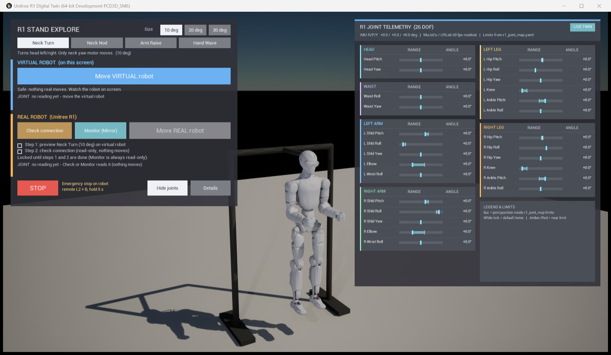
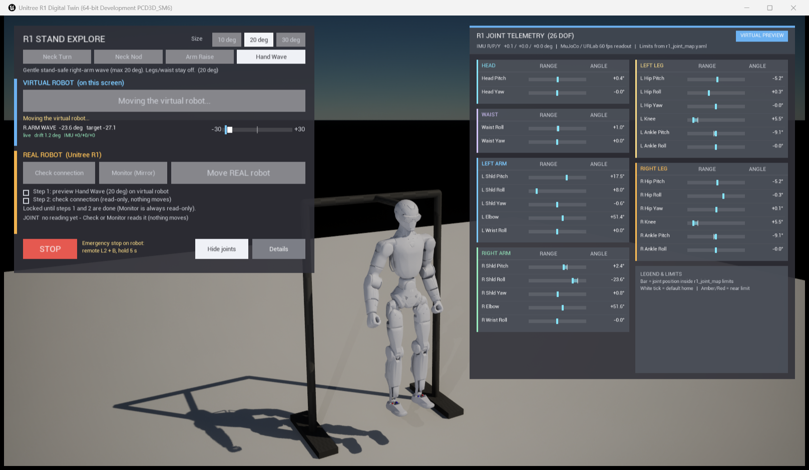
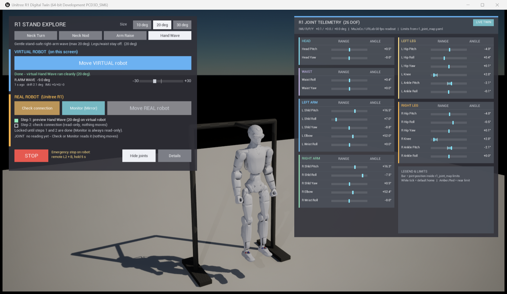

R1 Stand Explore: Stand-Safe Unitree Explore Port (Unreal Twin)
2026-11-20 · UE 5.8.4 standalone game, level R1_Stand, 1600×900 windowed.
Before

After
- Retained all five HUD anchors: VIRTUAL ROBOT (Move VIRTUAL robot), REAL ROBOT (Check connection), REAL ROBOT (Move REAL robot), STOP (+ remote L2+B 5 s emergency-stop reminder), and Details.
- Added stand-safe behaviour selector chips: Neck Turn (
head_yaw), Neck Nod (head_pitch, capped at 20 deg), Arm Raise (right_shoulder_pitchwithright_elbowgently held), and Hand Wave (right arm wave, capped at 20 deg). Legs and waist remain unpowered. - Added Monitor (Mirror) (
POST /monitor): read-only live telemetry stream (IMU R/P/Y, motor temperatures, bus voltage, active motor count, 26 joint angles) plus 3D twin mirroring with zero motor commands published. - Added right-docked R1 JOINT TELEMETRY (26 DOF) panel (open by default, toggled via Hide joints / Joints (26)): 2-column grouped sub-cards (Head, Waist, Left/Right Arm, Left/Right Leg) with normalized limit range bars from
r1_joint_map.yaml, default home ticks, limit-proximity colors, IMU R/P/Y header strip, and per-motor temperatures on the real robot. - Per-behaviour + per-size gating: changing behaviour or size locks Move REAL robot until both virtual preview and a fresh read-only robot check pass for those exact settings.



Not verified
- Real-robot execution,
Check connection, and live hardwareMonitor (Mirror)were not run against physical R1 hardware in this session (verified via offline unit tests with mockedLowState_/LowCmd_messages).